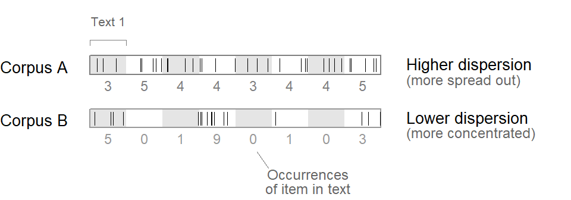
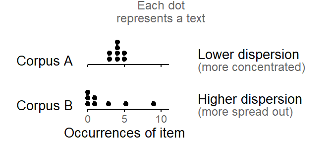

![]()
R setup
library(lattice)
source("C:/Users/ba4rh5/Work Folders/My Files/R projects/my_utils_website.R")library(lattice)
source("C:/Users/ba4rh5/Work Folders/My Files/R projects/my_utils_website.R")In corpus linguistics, the term dispersion is used to describe the distribution of an item or structure in a corpus (see Gries 2008, 2020). For most dispersion measures, a corpus must first be divided into units (or parts). These units commonly reflect the design of the corpus – they can be text files, for instance, or text categories. A dispersion index then describes the distribution of an item across these units. There are two general classes of measures:
Most dispersion measures range between 0 and 1, where 1 indicates a perfectly even distribution, or the maximal degree of pervasiveness (i.e. the item occurs in every unit).
From a statistical viewpoint, the input for the calculation of evenness measures would be considered a count variable, since it records the number of events (occurrences of the item) that are observed during a certain period of observation. In corpus linguistics, the “period of observation” is “text time”, expressed as a word count.
There is an extensive literature on the use of regression models for count variables (e.g. Long 1997; Cameron and Trivedi 2013; Hilbe 2014), and such models have seen some successful applications to word frequency data (e.g. Mosteller and Wallace 1984; Church and Gale 1995); Winter and Bürkner (2021) provide an accessible introduction for linguists. In this literature, the term “dispersion” is also used, though with a different (apparently opposite) meaning.
Let us first consider the corpus-linguistic (and lexicographic) sense, which can be best described visually, using a so-called “dispersion plot”. Figure 1 shows a dispersion plot for two corpora, A and B. The framed rectangles represent the sequence of words forming the corpus, and the spikes inside of these locate the occurrences of a specific item in the corpus. In corpus A, the item is spread out quite evenly. In corpus B, instances are more densely clustered, and there are large stretches where the item does not occur. In the corpus-linguistic sense, then, the dispersion of the item is greater in corpus A. The dispersion score for the item would be greater in Corpus A (i.e. closer to 1).
set.seed(2000)
n_tokens_A <- c(3,5,4,4,3,4,4,5)
n_tokens_B <- c(5,0,1,9,0,1,0,3)
n_texts <- length(n_tokens_A)
A_loc <- rep(1:n_texts, n_tokens_A)+runif(sum(n_tokens_A))
B_loc <- rep((1:n_texts)[n_tokens_B!=0], n_tokens_B[n_tokens_B!=0])+runif(sum(n_tokens_B))
xyplot(
1~1, type="n", xlim=c(-1,14), ylim=c(2.8,6),
par.settings=my_settings, scales=list(draw=F), xlab="", ylab="",
panel=function(...){
panel.rect(xleft=c(1,3,5,7), xright=c(2,4,6,8), ytop=5.1, ybottom=4.75,
border=FALSE, col="grey90", lwd=1)
panel.rect(xleft=1, xright=n_texts+1, ytop=5.1, ybottom=4.75,
border="grey50", lwd=1)
panel.segments(x0=A_loc, x1=A_loc, y0=4.8, y1=5.05, lwd=.75)
panel.text(x=(1:n_texts)+.5, y=4.55, label=n_tokens_A,
col="grey50", cex=.9)
panel.rect(xleft=c(1,3,5,7), xright=c(2,4,6,8), ytop=4.1, ybottom=3.75,
border=FALSE, col="grey90", lwd=1)
panel.rect(xleft=1, xright=n_texts+1, ytop=4.1, ybottom=3.75,
border="grey60", lwd=1)
panel.segments(x0=B_loc, x1=B_loc, y0=3.8, y1=4.05, lwd=.75)
panel.text(x=(1:n_texts)+.5, y=3.55, label=n_tokens_B,
col="grey60", cex=.9)
panel.text(x=.4, y=c(4,5)-.1, label=c("Corpus B", "Corpus A"),
adj=1, cex=1)
panel.text(x=9.7, y=c(3.8, 4.8), adj=0,
label=c("Lower dispersion\n", "Higher dispersion\n"),
col=1, lineheight=.85, cex=1)
panel.text(x=9.7, y=c(3.8, 4.8), adj=0,
label=c("\n(more concentrated)", "\n(more spread out)"),
col="grey40", lineheight=.85, cex=.9)
panel.segments(x0=1, x1=2, y0=5.4, y1=5.4, lwd=.5, col="grey50")
panel.segments(x0=1:2, x1=1:2, y0=5.4, y1=5.3, lwd=.5, col="grey50")
panel.text(x=1.5, y=5.75, label="Text 1", col="grey40", cex=.8)
panel.text(x=7, y=2.75, label="Occurrences\nof item in text", col="grey40",
cex=.9, lineheight=.85)
panel.segments(x0=5.9, x1=5.6, y0=3, y1=3.3, col="grey40", lwd=.5)
})
Note how each corpus is divided into 8 texts, which are shown in Figure 1 using greyshading. The numbers below the dispersion plot for each corpus report the number of occurrences of the item in each text. For corpus A, they range between 3 and 5; for corpus B, between 0 and 9.
Figure 2 shows a different representation of these data. Instead of looking at the corpus as a string of words, we consider the text-specific frequencies (sometimes called sub-frequencies) of the item. These indicate how often the item occurs in each document. Figure 2 shows these text-level token counts: Each text is represented by a dot, which marks how often the item appears in the text. In our hypothetical corpora, each text has the same length, which is why we can compare absolute counts. If texts differ in length, we would instead use normalized frequencies, i.e. occurrence rates such as “3.1 per thousand words”.
xyplot(
1~1, type="n", xlim=c(-1,7.5), ylim=c(-.35,2.3),
par.settings=my_settings, scales=list(draw=F), xlab="", ylab="",
panel=function(...){
panel.dotdiagram(1+(n_tokens_A/5), y_anchor=1, scale_y=.125, set_cex=1.3)
panel.dotdiagram(1+(n_tokens_B/5), y_anchor=0, scale_y=.125, set_cex=1.3)
panel.segments(x0=1, x1=3.2, y0=1, y1=1)
panel.segments(x0=1, x1=3.2, y0=0, y1=0)
panel.segments(x0=1+c(0,5,10)/5, x1=1+c(0,5,10)/5, y0=1, y1=.95)
panel.segments(x0=1+c(0,5,10)/5, x1=1+c(0,5,10)/5, y0=0, y1=-.05)
panel.text(x=1+c(0,5,10)/5, y=-.2, label=c(0,5,10), col="grey40", cex=.8)
panel.text(x=.6, y=c(0,1)+.1, label=c("Corpus B", "Corpus A"),
adj=1, cex=1)
panel.text(x=4, y=c(0.1 ,1.1), adj=0,
label=c("Higher dispersion\n", "Lower dispersion\n"),
col=1, lineheight=.85, cex=1)
panel.text(x=4, y=c(0.1 ,1.1), adj=0,
label=c("\n(more spread out)", "\n(more concentrated)"),
col="grey40", lineheight=.85, cex=.9)
panel.text(x=2, y=-.5, label="Occurrences of item", cex=1, lineheight=.9)
panel.text(x=3, y=2.2, label="Each dot\nrepresents a text", cex=.9,
lineheight=.9, col="grey40")
})
If we compare the distribution of text-level occurrence rates in the two corpora, we note that while the texts in corpus A form a dense pile, the occurrence rates in corpus B are more widely spread out. At this level of description, then, it is the data from corpus B that show greater “dispersion”. In the statistical literature on count regression, the term dispersion is used in this sense, i.e. to refer to the variability of unit-specific (i.e. text-level) occurrence rates (e.g. Long 1997, 221; Gelman 2021, 264–68). An awareness of the different meanings of “dispersion” will prove helpful for corpus linguists (and lexicographers) when engaging with the statistical literature on count data modeling.
@online{sönning2023,
author = {Sönning, Lukas},
title = {“{Dispersion}” in Corpus Linguistics and Statistics},
date = {2023-11-16},
url = {https://lsoenning.github.io/posts/2023-01-18_dispersion_terminology/},
langid = {en}
}